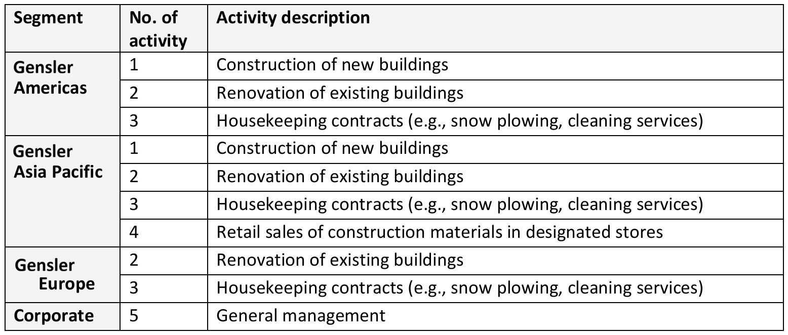
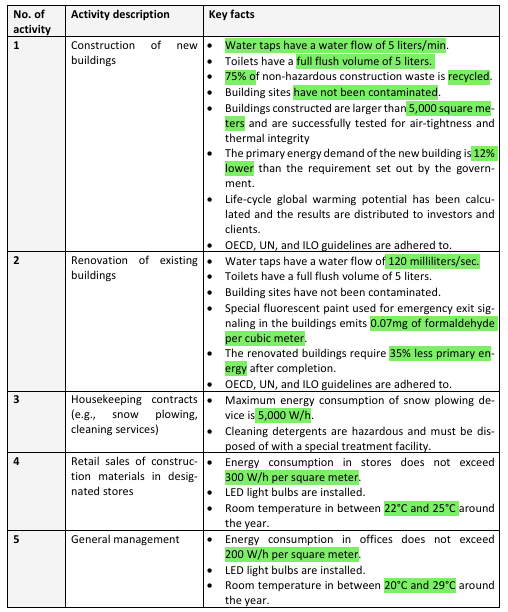
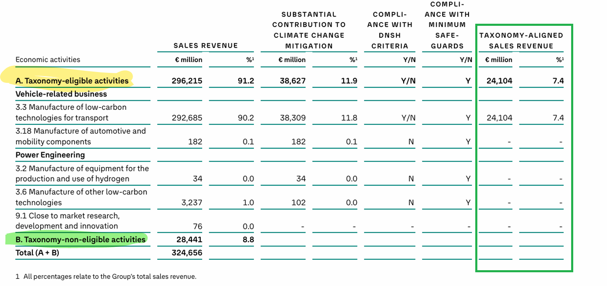
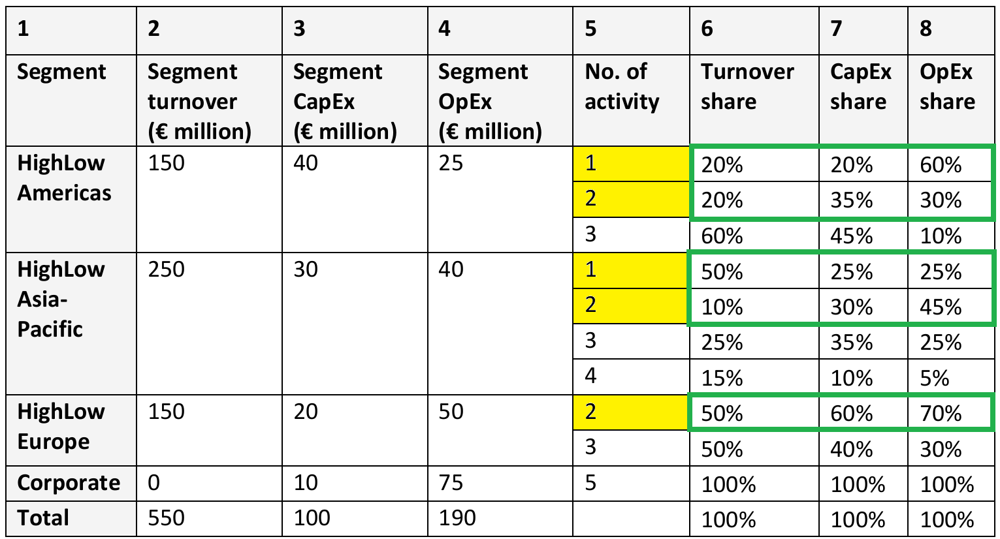
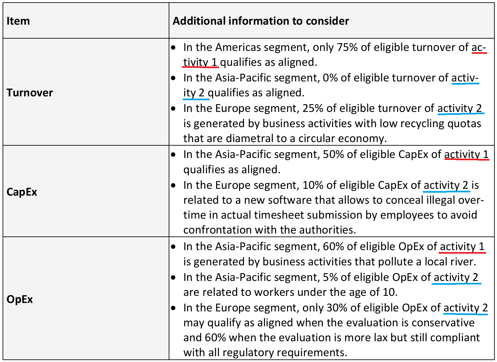
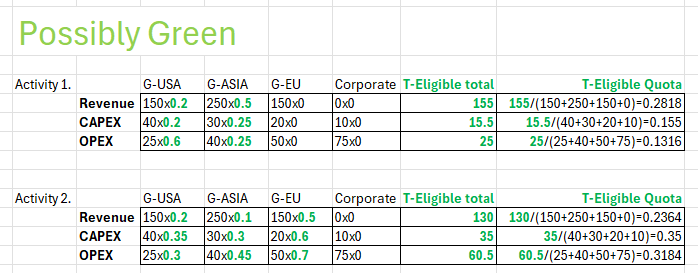
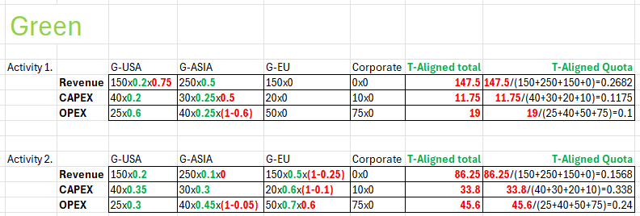
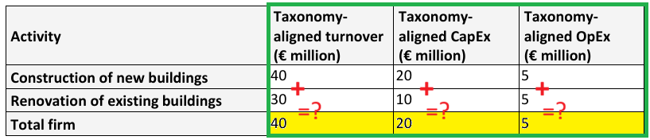
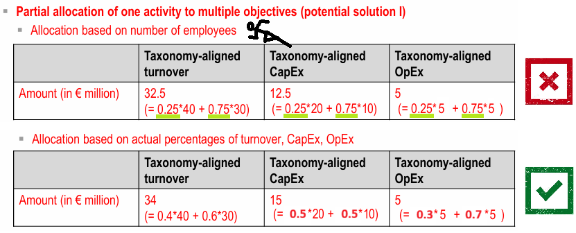

EU-Taxonomy Analysis

EU-Taxonomy is developed to create a common language on what Green activity is…to reduce ``green washing” and improve comparability. Using EU-Taxonomy, a firm can determine what economic activities are ENVORONMENTALLY (not Social or Governance-wise) sustainable under the conditions:
- Technical Screening Criteria (to see significance)
- DNSH (not to significantly harm others)
- Meeting Minimum Social Safeguards (to respect human right)

To meet the E-objectives - Climate, Water, Pollution, Biodiversity, Circular Econ -, a firm discloses what % of their business that is Green…in terms of the 3 KPIs - Revenue (what a firm does now), CAPEX (what a firm does for future), OPEX (how a firm supports its operation).
Case Study - EU Taxonomy Analysis
The construction company Gensler AG is preparing its nonfinancial report in accordance with the EU Taxonomy regulation 2020/852 (EU) for its most recent financial year. To prepare for the EU Taxonomy reporting process, the firm analyzes its activities according to its existing operating segments. The geographic segments reflect the operating focus of the business as well as its presence in key international regions and markets.

[A]. If being mentioned: taxonomy-eligibility
According to the Disclosures Delegated Act (EU) 2021, a taxonomy-eligible economic activity refers to an economic activity that is described in the Delegated Acts where technical screening criteria are defined for each environmental goal (Art.1 par.5 Disclosures Delegated Act). All remaining economic activities, that are not described in the Delegated Act, are taxonomy non-eligible (Art.1 par.6 Disclosures Delegated Act).
For Gensler AG, we are preparing their EU Taxonomy disclosure with regard to taxonomy-eligibility. The activities are listed in Table 1. We consider if these economic activities are described in the Climate Delegated Act (Comm. Del. Regulation (EU) 2021/2139).

activity 1 Construction of new building ⇒ {taxonomy-eligible}: described as activity 7.1 of the Climate Delegated Act
activity 2 Renovation of existing building ⇒ {taxonomy-eligible}: described as activity 7.2 of the Climate Delegated Act
activity 3 House keeping contracts ⇒ {taxonomy-non-eligible}: not described in any delegated act (yet)
activity 4 Retail sales of construction materials ⇒ {taxonomy-non-eligible}: not described in any delegated act (yet)
activity 5 General management ⇒ {taxonomy-non-eligible}: not described in any delegated act (yet)
[B]. If meeting criteria: taxonomy-alignment
According to the Disclosures Delegated Act (EU) 2021/2178, a taxonomy-aligned economic activity refers to an economic activity that complies with the requirements laid down in Art.3 of Commission Delegated Regulation (EU) 2020/852 for each environmental goal (Art.1 par.2 Disclosures Delegated Act).
- Art.3 of Regulation (EU) 2020/852: An economic activity shall qualify as environmentally sustainable where that your economic activity….
- contributes substantially to one or more of the six environmental objectives.
- does not significantly harm any of the environmental objectives (DNSH).
- is carried out in compliance with the minimum social safeguards (basic human rights, labor, and anti-corruption standards based on OECD, UN, and ILO principles).
- Complies with the technical screening criteria set out in Delegated Acts for the respective environmental objective.
Gensler AG is preparing their EU Taxonomy disclosure with regard to taxonomy-alignment. In Table 2, activities are listed. Considering the economic activities described in the Climate Delegated Act (Comm. Del. Regulation (EU) 2021/2139), let’s see if they are taxonomy-aligned, and meet the climate-change mitigation goal

activity 1 Construction of new building ⇒ {taxonomy-aligned}:
activity 2 Renovation of existing building ⇒ {taxonomy-not-aligned}:
activity 3 House keeping contracts ⇒ {NA}:
activity 4 Retail sales of construction materials ⇒ {NA}:
activity 5 General management ⇒ {NA}:
[C]. Calculating the taxonomy-eligible/aligned quotas
To comply with the EU Taxonomy, Gensler AG must report the taxonomy quotas for the current reporting year. Officially, the reporting output shall be presented as suggested by the regulation (Table 3). However, Gensler AG is first preparing a rough draft for filling in this table. Let’s assume that activity 1. (Construction of new building) and activity 2. (Renovation of existing building) are covered by the description in the Disclosures Delegated Act towards the environmental objective of climate change mitigation.



\[ \begin{aligned} \text{Taxonomy-Eligible Quota} &= \frac{\text{Taxonomy-Eligible total}}{\text{Total for segments (Revenue/CAPEX/OPEX) }}\\ \text{Taxonomy-Aligned Quota} &= \frac{\text{Taxonomy-Aligned total}}{\text{Total for segments (Revenue/CAPEX/OPEX) }} \end{aligned} \]
- [i]. Let’s calculate the taxonomy quotas for
taxonomy-eligibleactivities (eligible turnover, CapEx, OpEx) per activity using the information in Table 4.  - [ii]. Let’s calculate the taxonomy quotas for
taxonomy-eligibleactivities (eligible turnover, CapEx, OpEx) for the whole firm using the information in Table 4.
\[ \begin{aligned} SUM_{activities} &= 0.2818 + 0.2364 +.. \text{for Revenue} \\ SUM_{activities} &= 0.155 + 0.35 +.. \text{for CAPEX} \\ SUM_{activities} &= 0.1316 + 0.3184 +.. \text{for OPEX} \end{aligned} \]
[iii]. Let’s calculate the taxonomy quotas for
taxonomy-alignedper activity using the information in Table 4 and 5, assuming that the CEO wishes to report quotas that are as high as possible. [iv]. Let’s calculate the taxonomy quotas for
taxonomy-alignedactivities for the whole firm using the information in Table 4 and 5.
\[ \begin{aligned} SUM_{activities} &= 0.2682 + 0.1568 +.. \text{for Revenue} \\ SUM_{activities} &= 0.1175 + 0.338 +.. \text{for CAPEX} \\ SUM_{activities} &= 0.1 + 0.24 +.. \text{for OPEX} \end{aligned} \]
[D]. Potential for Double-Counting
In Annex 1, par 1.2. Disclosure Delegated Acts, firms have to explain how they avoid double-counting in the allocation of Revenue, CAPEX, OPEX across activities.
The subsidiary of Gensler AG, Sasaki, will be consolidated in the nonfinancial report of Gensler AG. Sasaki is engaged in similar economic activities as its parent company. Since Gensler AG only has contracts with customers where both new buildings are constructed and existing buildings are renovated simultaneously, the taxonomy-aligned turnover, CapEx, and OpEx are allocated towards both economic activities by the financial reporting department. Due to differences in the DNSH check, the taxonomy-aligned values partly vary between the two economic activities even though they stem from the same underlying contracts. Table 6 reports the values for both economic activities separately as well as for the total firm.

Let’s say the CEO of parent company Gensler AG wishes to report taxonomy quotas that are as high as possible. Now let’s calculate the taxonomy-aligned turnover, CapEx, and OpEx for the subsidiary Sasaki according to the EU taxonomy regulation and considering the CEO’s objective.

issue: double-counting possible (not allowed)
Solution I. 
Solution II.

Allocation of activities only to objective construction of new buildings yields the highest taxonomy quotas as requested by the CEO. The reported values are subject to the individual allocation decision made by firm management and not objectively justified by the EU taxonomy regulation.
Bibliography
[1] Climate Delegated Act: Commission Delegated Regulation (EU) 2021/2139. Available at https://eurlex.europa.eu/legal-content/EN/TXT/PDF/?uri=CELEX:02021R2139-20250108 (consolidated version, January 8, 2025).
[2] Environmental Delegated Act: Commission Delegated Regulation (EU) 2023/2486. Available at https://eur-lex.europa.eu/legal-content/EN/TXT/PDF/?uri=OJ:L_202302486 (November 11, 2023).
[3] Disclosures Delegated Act: Commission Delegated Regulation (EU) 2021/2178. Available at https://eur-lex.europa.eu/legal-content/EN/TXT/PDF/?uri=CELEX:02021R2178-20240101 (consolidated version, January 1, 2024).